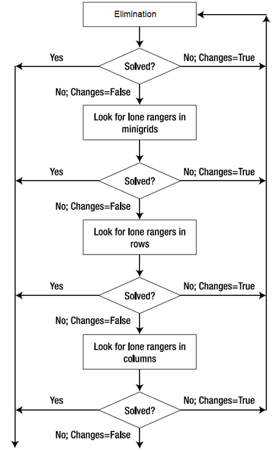

Summary
We have implemented two versions of sudoku solvers in parallel using the OpenMp library: a humanistic solver and a brute force solver. The humanistic solver is based off Crook's Algorithm, which is a deterministic solver except for cases in which guessing and backtracking is necessary. The brute force solver searches through all permutations of possibly correct answers. We implemented two versions because the humanistic version, although very fast, did not benefit much from parallelization which the brute force method showed considerable speedup.
Background
Sudoku is a logic-based number puzzle featuring a 9x9 board divided into rows, columns, and 3x3 square blocks. The goal of the game is to fill each row, column, and block with unique numbers in the range 1 through 9. Variations of sudoku have used larger boards, such as hexadoku: sudoku with a 16x16 board.
Here is an example of a sudoku puzzle (left) along with its solution (right):
The difficulty of any particular sudoku puzzle depends on how many numbers are initially given to the user. Easy sudoku puzzles generally start with 32 or more numbers, medium puzzles with 26-30 numbers, hard puzzles with 22-24 numbers, and expert puzzles with fewer than 20 numbers.
Crook's Algorithm
Crook's Algorithm describes a few methods for deterministically solving cells in sudoku puzzles, four of which are used by our humanistic solver:
- Elimination: If a cell has only one possible value left, then by process of elimination that value is the solution for that cell.
- Lone Ranger: If within a row/column/block, a value has only one cell where it can possibly go, then that value must go in that cell.
- Twins: If within a row/column/block, two values are contained within two cells, then no other values can go in those two cells.
- Triplets: If within a row/column/block, three values are contained within three cells, then no other values can go in those three cells.
Approach
Humanistic Solver
The humanistic solver tries the four methods in the order above. If any method makes changes, then the solver starts over from elimination. This is useful since most changes are made by elimination and lone rangers, and also twins and triplets take more time to find.
The following is a flow chart to visualize this process:
We parallelized each of the methods used by the solver. Elimination was performed on each cell. Lone rangers, twins, and triplets was performed on each row, column, and block in parallel. Fine-grained synchronization was necessary because all threads were working with the same sudoku board. We took a few measures to minimize synchronization:
- Solving rows, columns, and blocks in separate parallelized loops.
- Maintaining two boards: a board with the solutions, and a board with the possible values in each cell.
These changes made it possible to remove all critical sections and locks in our code. For example, it was initially necessary to use a reader-writer lock in lone ranger, but we found a way to restructure the code to avoid locks.
Brute Force Solver
The brute force solver searches through all valid solutions in parallel to find one correct answer. It does so by iterating through the following steps:
- Select the cell cwith the least possible values left (n values).
- Push onto the stack n new boards, each with a different solution for cell c.
- Pop a board from the stack.
- If the board is solved, return.
- Otherwise, repeat from step 1.
The parallel version is still being tweaked.
Results
Humanistic Solver
The humanistic solver did not achieve any noticeable speedup. We suspect this is because the solver was so fast that the overhead of spawning threads outweighed the benefits of parallelization. Here are the results:

For most of the puzzles, the solver performed worse when solving in parallel. However, it is interesting to note that the parallel solver achieved better speedup on the more challenging puzzles. This is perhaps because the difficult puzzles used harder techniques (i.e. twins and triplets) which would benefit more from parallelism, and they ran for more iterations.
Brute Force Solver
References